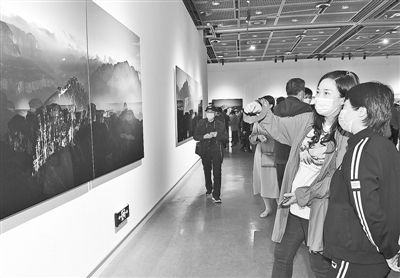

艺臻创意摄影工作室
Yizhen creative photography studio

——— 摄影资讯 ———
本报讯（记者 秦华 文 周甬 图）28日，“大相中原——刘鲁豫摄影作品展”在省美术馆华美绽放。展览展出了中国摄协副主席，河南省文联党组成员、副主席，河南摄协主席刘鲁豫创作的50幅精品力作，展出作品以河南自然生态为主题，用影像的方式为河南的大美山水打call。
本次展览由省文联主办，省摄影家协会承办，是省文联保护传承弘扬黄河文化的一次重要实践，也是刘鲁豫对中原大地的一次深情凝望，更是作者向老家河南献上的一次阶段性、专题性成果汇报展。
刘鲁豫从事摄影30多年，他最初的创作是着力于纪实摄影的拍摄，后来，刘鲁豫发现河南省的风光摄影创作是一个短板，便投身于风光摄影的创作。多年来，刘鲁豫曾多次远赴新疆、西藏、云南、四川等地，拍摄雪山、草甸、大漠、戈壁，甚至刻意选择一些人迹罕至的地方，创作了一些被摄影界认可的作品。然而，作为一个地地道道的河南人，刘鲁豫想得最多的，依然是怎样用影像为河南山水放歌。
本次展览以河南自然生态为主，重点展现河南的太行山、伏牛山、大别山和黄河这“三山一河”。记者在展厅看到，在刘鲁豫的镜头下，绝壁苍崖、曲流峡谷的太行山，植被葱茏、层峦叠嶂的伏牛山，千峰百嶂、山川悠远的大别山，厚重多彩、绚丽壮美的黄河，都得到了精彩的呈现。他的摄影作品，既聚焦“三山一河”地理风貌、山川风物，突出大自然的鬼斧神工，也兼顾历史人文故事，展示着中原文化的意蕴丰厚、悠久绵长。
不同于常规性摄影展览大都是百幅左右的规模，“大相中原”共展出50幅作品。谈及此，刘鲁豫说：“我希望在有限的作品中，尽量精简，争取把个性化、有特色、既不雷同别人也不雷同自己的新作拿出来。同时，放大作品的尺幅，力求展示出河南山川的大气磅礴、宏阔厚重，让作品极富视觉冲击力。”
本次展览将持续至5月5日，免费对公众开放。